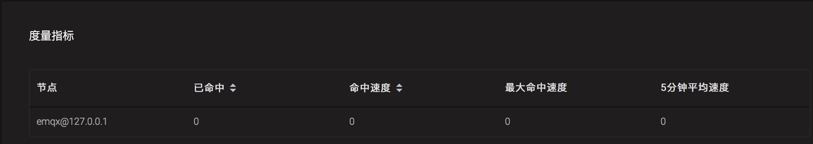
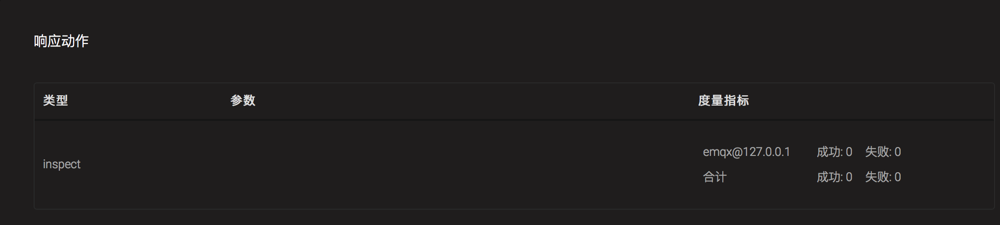
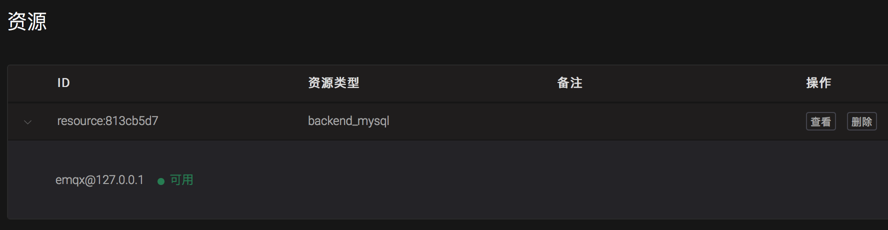

命令行接口
EMQ X Broker 提供了 ./bin/emqx_ctl 的管理命令行，用于用户对 EMQ X Broker 进行管理、配置、查询。
status 命令
查询 EMQ X Broker 运行状态:
$ ./bin/emqx_ctl status
Node 'emqx@127.0.0.1' is started
emqx v4.0.0 is running
mgmt 命令
mgmt 命令查询应用程序。
| 命令 | 描述 |
|---|---|
mgmt list |
列出应用程序列表 |
mgmt insert <AppId> <Name> |
添加允许访问 HTTP API 的应用程序 |
mgmt update <AppId> <status> |
更新允许访问 HTTP API 的应用程序 |
mgmt lookup <AppId> |
获取允许访问 HTTP API 的应用程序详情 |
mgmt delete <AppId> |
删除允许访问 HTTP API 的应用程序 |
mgmt list
列出应用程序列表:
$ ./bin/emqx_ctl mgmt list
app_id: 901abdba8eb8c, secret: MjgzMzQ5MjM1MzUzMTc4MjgyMjE3NzU4ODcwMDg0NjQ4OTG, name: hello, desc: , status: true, expired: undefined
mgmt insert
添加 HTTP API 的应用程序:
$ ./bin/emqx_ctl mgmt insert dbcb6e023370b world
AppSecret: MjgzMzQ5MjYyMTY3ODk4MjA5NzMwODExODMxMDM1NDk0NDA
mgmt update
更新 HTTP API 的应用程序:
$ ./bin/emqx_ctl mgmt update dbcb6e023370b stop
update successfully.
mgmt lookup
获取 HTTP API 的应用程序详情:
$ ./bin/emqx_ctl mgmt lookup dbcb6e023370b
app_id: dbcb6e023370b
secret: MjgzMzQ5MjYyMTY3ODk4MjA5NzMwODExODMxMDM1NDk0NDA
name: world
desc: Application user
status: stop
expired: undefined
mgmt delete
删除 HTTP API 的应用程序:
$ ./bin/emqx_ctl mgmt delete dbcb6e023370b
ok
broker 命令
broker 命令查询服务器基本信息，启动时间，统计数据与性能数据。
| 命令 | 描述 |
|---|---|
broker |
查询 EMQ X Broker 描述、版本、启动时间 |
broker stats |
查询连接 (Connection)、会话 (Session)、主题 (Topic)、订阅 (Subscription)、路由 (Route) 统计信息 |
broker metrics |
查询 MQTT 报文 (Packet)、消息 (Message) 收发统计 |
查询 EMQ X Broker 基本信息，包括版本、启动时间等:
$ ./bin/emqx_ctl broker
sysdescr : EMQ X Broker
version : 4.0.0
uptime : 4 minutes, 52 seconds
datetime : 2020-02-21 09:39:58
broker stats
查询服务器客户端连接 (Connections)、主题 (Topics)、订阅 (Subscriptions)、路由 (Routes) 统计:
$ ./bin/emqx_ctl broker stats
actions.count : 5
actions.max : 5
channels.count : 0
channels.max : 0
connections.count : 0
connections.max : 0
resources.count : 0
resources.max : 0
retained.count : 3
retained.max : 3
routes.count : 0
routes.max : 0
rules.count : 0
rules.max : 0
sessions.count : 0
sessions.max : 0
suboptions.count : 0
suboptions.max : 0
subscribers.count : 0
subscribers.max : 0
subscriptions.count : 0
subscriptions.max : 0
subscriptions.shared.count : 0
subscriptions.shared.max : 0
topics.count : 0
topics.max : 0
broker metrics
查询服务器流量 (Bytes)、MQTT 报文 (Packets)、消息 (Messages) 收发统计:
$ ./bin/emqx_ctl broker metrics
actions.success : 0
bytes.received : 0
bytes.sent : 0
client.auth.anonymous : 0
client.authenticate : 0
client.check_acl : 0
client.connack : 0
client.connect : 0
client.connected : 0
client.disconnected : 0
client.subscribe : 0
client.unsubscribe : 0
delivery.dropped : 0
delivery.dropped.expired : 0
delivery.dropped.no_local : 0
delivery.dropped.qos0_msg : 0
delivery.dropped.queue_full : 0
delivery.dropped.too_large : 0
messages.acked : 0
messages.delayed : 0
messages.delivered : 0
messages.dropped : 0
messages.dropped.expired : 0
messages.dropped.no_subscriber: 0
messages.forward : 0
messages.publish : 0
messages.qos0.received : 0
messages.qos0.sent : 0
messages.qos1.received : 0
messages.qos1.sent : 0
messages.qos2.received : 0
messages.qos2.sent : 0
messages.received : 0
messages.retained : 3
messages.sent : 0
packets.auth.received : 0
packets.auth.sent : 0
packets.connack.auth_error : 0
packets.connack.error : 0
packets.connack.sent : 0
packets.connect.received : 0
packets.disconnect.received : 0
packets.disconnect.sent : 0
packets.pingreq.received : 0
packets.pingresp.sent : 0
packets.puback.inuse : 0
packets.puback.missed : 0
packets.puback.received : 0
packets.puback.sent : 0
packets.pubcomp.inuse : 0
packets.pubcomp.missed : 0
packets.pubcomp.received : 0
packets.pubcomp.sent : 0
packets.publish.auth_error : 0
packets.publish.dropped : 0
packets.publish.error : 0
packets.publish.received : 0
packets.publish.sent : 0
packets.pubrec.inuse : 0
packets.pubrec.missed : 0
packets.pubrec.received : 0
packets.pubrec.sent : 0
packets.pubrel.missed : 0
packets.pubrel.received : 0
packets.pubrel.sent : 0
packets.received : 0
packets.sent : 0
packets.suback.sent : 0
packets.subscribe.auth_error : 0
packets.subscribe.error : 0
packets.subscribe.received : 0
packets.unsuback.sent : 0
packets.unsubscribe.error : 0
packets.unsubscribe.received : 0
rules.matched : 0
session.created : 0
session.discarded : 0
session.resumed : 0
session.takeovered : 0
session.terminated : 0
cluster 命令
cluster 命令可以管理由多个 EMQ X Broker 节点（进程）组成的集群:
| 命令 | 描述 |
|---|---|
cluster join <Node> |
加入集群 |
cluster leave |
离开集群 |
cluster force-leave <Node> |
从集群删除节点 |
cluster status |
查询集群状态 |
示例:
为更好地展示 cluster 命令，我们先在本机启动两个节点并组成集群，为避免端口冲突，我们对 emqx2 节点的监听端口做出了调整，例如 MQTT/TCP 监听端口由默认的 1883 改为了 2883，详情请参见 配置说明 与 配置项。
启动 emqx1 :
$ cd emqx1 && ./bin/emqx start
启动 emqx2 :
$ cd emqx2 && ./bin/emqx start
使用 cluster join <Node> 将两个节点组成集群：
$ cd emqx2 && ./bin/emqx_ctl cluster join emqx1@127.0.0.1
Join the cluster successfully.
Cluster status: [{running_nodes,['emqx1@127.0.0.1','emqx2@127.0.0.1']}]
任意节点目录下查询集群状态:
$ ./bin/emqx_ctl cluster status
Cluster status: [{running_nodes,['emqx2@127.0.0.1','emqx1@127.0.0.1']}]
集群消息路由测试: MQTT 命令行工具使用由 EMQ X 团队开发的 emqtt 客户端。
# emqx1 节点（1883 端口）订阅主题 x
$ ./bin/emqtt sub -t x -q 1 -p 1883
Client emqtt-a7de8fffbe2fbeb2fadb sent CONNECT
Client emqtt-a7de8fffbe2fbeb2fadb subscribed to x
# 向 emqx2 节点（2883 端口 ）发布消息
$ ./bin/emqtt pub -t x -q 1 -p 2883 --payload hello
Client emqtt-0898fa447676e17479a5 sent CONNECT
Client emqtt-0898fa447676e17479a5 sent PUBLISH (Q1, R0, D0, Topic=x, Payload=...(5 bytes))
Client emqtt-0898fa447676e17479a5 sent DISCONNECT
# emqx1 节点（1883 端口）收到消息
$ ./bin/emqtt sub -t x -q 1 -p 1883
hello
emqx2 节点离开集群:
$ cd emqx2 && ./bin/emqx_ctl cluster leave
强制 emqx2 节点离开集群，需要在集群下的目标节点以外的节点上进行操作:
$ cd emqx1 && ./bin/emqx_ctl cluster force-leave emqx2@127.0.0.1
注意，EMQ X Broker 不支持一个已经在一个集群中的节点加入另外一个集群，因为这会导致两个集群数据不一致，但支持加入过集群的节点在离开该集群后加入另一个集群。
acl 命令
重新加载 acl 规则:
$ ./bin/emqx_ctl acl reload
ok
clients 命令
clients 命令查询连接的 MQTT 客户端。
| 命令 | 描述 |
|---|---|
clients list |
列出所有客户端连接 |
clients show <ClientId> |
查询指定 ClientId 的客户端 |
clients kick <ClientId> |
踢除指定 ClientId 的客户端，连接与会话将一并终结。 |
clients list
列出所有客户端连接:
$ ./bin/emqx_ctl clients list
Client (mosqsub/43832-airlee.lo, username=test1, peername=127.0.0.1:62135, clean_start=true, keepalive=60, session_expiry_interval=0, subscriptions=0, inflight=0, awaiting_rel=0, delivered_msgs=0, enqueued_msgs=0, dropped_msgs=0, connected=true, created_at=1582249657, connected_at=1582249657)
Client (mosqsub/44011-airlee.lo, username=test2, peername=127.0.0.1:64961, clean_start=true, keepalive=60, session_expiry_interval=0, subscriptions=0, inflight=0, awaiting_rel=0, delivered_msgs=0, enqueued_msgs=0, dropped_msgs=0, connected=true, created_at=1582249657, connected_at=1582249657, disconnected_at=1582249702)
...
返回 Client 对象的属性:
| Name | 描述 |
|---|---|
| username | 用户名 |
| peername | 客户端 IP 与端口 |
| clean_start | MQTT Clean Start |
| keepalive | MQTT KeepAlive |
| session_expiry_interval | 会话过期间隔 |
| subscriptions | 当前订阅数量 |
| inflight | 当前正在下发的 QoS 1 和 QoS 2 的消息总数 |
| awaiting_rel | 等待客户端发送 PUBREL 的 QoS2 消息数 |
| delivered_msgs | EMQ X Broker 向此客户端转发的消息数量 (包含重传) |
| enqueued_msgs | 消息队列当前长度 |
| dropped_msgs | 消息队列达到最大长度后丢弃的消息数量 |
| connected | 是否在线 |
| created_at | 会话创建时间戳 |
| connected_at | 客户端连接时间戳 |
| disconnected_at | 客户端断开连接时间戳（仅当断开连接还保留会话时才会出现） |
clients show
查询指定 ClientId 的客户端:
$ ./bin/emqx_ctl clients show "mosqsub/43832-airlee.lo"
Client (mosqsub/43832-airlee.lo, username=test1, peername=127.0.0.1:62747, clean_start=false, keepalive=60, session_expiry_interval=7200, subscriptions=0, inflight=0, awaiting_rel=0, delivered_msgs=0, enqueued_msgs=0, dropped_msgs=0, connected=true, created_at=1576479557, connected_at=1576479557)
clients kick
踢除指定 ClientId 的客户端:
$ ./bin/emqx_ctl clients kick "clientid"
ok
routes 命令
routes 命令用于查询路由信息。
EMQ X Broker 中路由是指主题与节点的映射关系，用于在多个节点之间路由消息。
| 命令 | 描述 |
|---|---|
routes list |
列出所有路由 |
routes show <Topic> |
查询指定 Topic 的路由 |
routes list
列出所有路由:
$ ./bin/emqx_ctl routes list
t2/# -> emqx2@127.0.0.1
t/+/x -> emqx2@127.0.0.1,emqx@127.0.0.1
routes show
查询指定 Topic d的路由:
$ ./bin/emqx_ctl routes show t/+/x
t/+/x -> emqx2@127.0.0.1,emqx@127.0.0.1
subscriptions 命令
subscriptions 命令查询消息服务器的订阅 (Subscription) 表。
| 命令 | 描述 |
|---|---|
subscriptions list |
列出所有订阅 |
subscriptions show <ClientId> |
查询指定 ClientId 客户端的订阅 |
subscriptions add <ClientId> <Topic> <QoS> |
手动添加静态订阅 |
subscriptions del <ClientId> <Topic> |
手动删除静态订阅 |
subscriptions list
列出所有订阅:
$ ./bin/emqx_ctl subscriptions list
mosqsub/91042-airlee.lo -> t/y:1
mosqsub/90475-airlee.lo -> t/+/x:2
subscriptions show
查询某个 Client 的订阅:
$ ./bin/emqx_ctl subscriptions show 'mosqsub/90475-airlee.lo'
mosqsub/90475-airlee.lo -> t/+/x:2
subscriptions add
手动添加订阅关系:
$ ./bin/emqx_ctl subscriptions add 'mosqsub/90475-airlee.lo' '/world' 1
ok
subscriptions del
手动删除订阅关系:
$ ./bin/emqx_ctl subscriptions del 'mosqsub/90475-airlee.lo' '/world'
ok
plugins 命令
plugins 命令用于加载、卸载、查询插件应用。EMQ X Broker 通过插件扩展认证、定制功能，插件配置位于 etc/plugins/ 目录下。
| 命令 | 描述 |
|---|---|
plugins list |
列出全部插件 (Plugin) |
plugins load <Plugin> |
加载插件 (Plugin) |
plugins unload <Plugin> |
卸载插件 (Plugin) |
plugins reload <Plugin> |
重载插件 (Plugin) |
当配置文件发生更改，如果需要配置立即生效，你可以执行 emqx_ctl reload <Plugin\> 命令，即使插件在配置修改时并未处于运行状态，你也应当使用此命令而不是emqx_ctl load
plugins list
列出全部插件:
$ ./bin/emqx_ctl plugins list
Plugin (emqx_auth_clientid, version=v4.0.0, description=EMQ X Authentication with ClientId/Password, active=false)
Plugin (emqx_auth_http, version=v4.0.0, description=EMQ X Authentication/ACL with HTTP API, active=false)
Plugin (emqx_auth_jwt, version=v4.0.0, description=EMQ X Authentication with JWT, active=false)
Plugin (emqx_auth_ldap, version=v4.0.0, description=EMQ X Authentication/ACL with LDAP, active=false)
Plugin (emqx_auth_mongo, version=v4.0.0, description=EMQ X Authentication/ACL with MongoDB, active=false)
Plugin (emqx_auth_mysql, version=v4.0.0, description=EMQ X Authentication/ACL with MySQL, active=false)
Plugin (emqx_auth_pgsql, version=v4.0.0, description=EMQ X Authentication/ACL with PostgreSQL, active=false)
Plugin (emqx_auth_redis, version=v4.0.0, description=EMQ X Authentication/ACL with Redis, active=false)
Plugin (emqx_auth_username, version=v4.0.0, description=EMQ X Authentication with Username and Password, active=false)
Plugin (emqx_bridge_mqtt, version=v4.0.0, description=EMQ X Bridge to MQTT Broker, active=false)
Plugin (emqx_coap, version=v4.0.0, description=EMQ X CoAP Gateway, active=false)
Plugin (emqx_dashboard, version=v4.0.0, description=EMQ X Web Dashboard, active=true)
Plugin (emqx_delayed_publish, version=v4.0.0, description=EMQ X Delayed Publish, active=false)
Plugin (emqx_lua_hook, version=v4.0.0, description=EMQ X Lua Hooks, active=false)
Plugin (emqx_lwm2m, version=v4.0.0, description=EMQ X LwM2M Gateway, active=false)
Plugin (emqx_management, version=v4.0.0, description=EMQ X Management API and CLI, active=true)
Plugin (emqx_plugin_template, version=v4.0.0, description=EMQ X Plugin Template, active=false)
Plugin (emqx_psk_file, version=v4.0.0, description=EMQX PSK Plugin from File, active=false)
Plugin (emqx_recon, version=v4.0.0, description=EMQ X Recon Plugin, active=true)
Plugin (emqx_reloader, version=v4.0.0, description=EMQ X Reloader Plugin, active=false)
Plugin (emqx_retainer, version=v4.0.0, description=EMQ X Retainer, active=true)
Plugin (emqx_rule_engine, version=v4.0.0, description=EMQ X Rule Engine, active=true)
Plugin (emqx_sn, version=v4.0.0, description=EMQ X MQTT SN Plugin, active=false)
Plugin (emqx_statsd, version=v4.0.0, description=Statsd for EMQ X, active=false)
Plugin (emqx_stomp, version=v4.0.0, description=EMQ X Stomp Protocol Plugin, active=false)
Plugin (emqx_web_hook, version=v4.0.0, description=EMQ X Webhook Plugin, active=false)
插件属性:
| Name | 描述 |
|---|---|
| version | 插件版本 |
| description | 插件描述 |
| active | 是否已加载 |
plugins load
加载插件:
$ ./bin/emqx_ctl plugins load emqx_lua_hook
Plugin emqx_lua_hook loaded successfully.
plugins unload
卸载插件:
$ ./bin/emqx_ctl plugins unload emqx_lua_hook
Plugin emqx_lua_hook unloaded successfully.
plugins reload
重载插件:
$ ./bin/emqx_ctl plugins reload emqx_lua_hook
Plugin emqx_lua_hook reloaded successfully.
vm 命令
vm 命令用于查询 Erlang 虚拟机负载、内存、进程、IO 信息。
| 命令 | 描述 |
|---|---|
vm |
等同于 vm all |
vm all |
查询 VM 全部信息 |
vm load |
查询 VM 负载 |
vm memory |
查询 VM 内存 |
vm process |
查询 VM Erlang 进程数量 |
vm io |
查询 VM io 最大文件句柄 |
vm ports |
查询 VM 的端口 |
vm all
查询 VM 全部信息，包括负载、内存、Erlang 进程数量等:
$ ./bin/emqx_ctl vm all
cpu/load1 : 4.22
cpu/load5 : 3.29
cpu/load15 : 3.16
memory/total : 99995208
memory/processes : 38998248
memory/processes_used : 38938520
memory/system : 60996960
memory/atom : 1189073
memory/atom_used : 1173808
memory/binary : 100336
memory/code : 25439961
memory/ets : 7161128
process/limit : 2097152
process/count : 315
io/max_fds : 10240
io/active_fds : 0
ports/count : 18
ports/limit : 1048576
vm load
查询 VM 负载:
$ ./bin/emqx_ctl vm load
cpu/load1 : 2.21
cpu/load5 : 2.60
cpu/load15 : 2.36
vm memory
查询 VM 内存:
$ ./bin/emqx_ctl vm memory
memory/total : 23967736
memory/processes : 3594216
memory/processes_used : 3593112
memory/system : 20373520
memory/atom : 512601
memory/atom_used : 491955
memory/binary : 51432
memory/code : 13401565
memory/ets : 1082848
vm process
查询 Erlang 进程数量及其限制:
$ ./bin/emqx_ctl vm process
process/limit : 2097152
process/count : 314
vm io
查询文件描述符数量及其限制:
$ ./bin/emqx_ctl vm io
io/max_fds : 10240
io/active_fds : 0
vm ports
查询端口占用数量及其限制:
$ ./bin/emqx_ctl vm ports
ports/count : 18
ports/limit : 1048576
mnesia 命令
查询 mnesia 数据库系统状态。
log 命令
log 命令用于设置日志等级。访问 Documentation of logger 以获取详细信息
| 命令 | 描述 |
|---|---|
log set-level <Level> |
设置主日志等级和所有 Handlers 日志等级 |
log primary-level |
查看主日志等级 |
log primary-lelvel <Level> |
设置主日志等级 |
log handlers list |
查看当前安装的所有 Hanlders |
log handlers set-level <HandlerId> <Level> |
设置指定 Hanlder 的日志等级 |
日志的等级由低到高分别为：debug | info | notice | warning | error | critical | alert | emergency，日志等级越低，系统输出的日志数量越多，消耗的系统资源越大。为提高系统运行性能，默认的主日志等级是 error。
log set-level
设置主日志等级和所有 Handlers 日志等级:
$ ./bin/emqx_ctl log set-level debug
debug
log primary-level
查看主日志等级:
$ ./bin/emqx_ctl log primary-level
debug
log primary-level
设置主日志等级:
$ ./bin/emqx_ctl log primary-level info
info
log handlers list
查看当前安装的所有 Hanlders:
$ ./bin/emqx_ctl log handlers list
LogHandler (id=emqx_logger_handler, level=debug, destination=unknown)
LogHandler (id=file, level=debug, destination=log/emqx.log)
LogHandler (id=default, level=debug, destination=console)
log handlers set-level
设置指定 Hanlder 的日志等级:
$ ./bin/emqx_ctl log handlers set-level emqx_logger_handler error
error
trace 命令
trace 命令用于追踪某个 Client 或 Topic，打印日志信息到文件，详情请查看 日志与追踪。
| 命令 | 描述 |
|---|---|
trace list |
列出所有开启的追踪 |
trace start client <ClientId> <File> [<Level>] |
开启 Client 追踪，存储指定等级的日志到文件 |
trace stop client <ClientId> |
关闭 Client 追踪 |
trace start topic <Topic> <File> [<Level>] |
开启 Topic 追踪，存储指定等级的日志到文件 |
trace stop topic <Topic> |
关闭 Topic 追踪 |
trace start client []
开启 Client 追踪:
$ ./bin/emqx_ctl log primary-level debug
debug
$ ./bin/emqx_ctl trace start client clientid log/clientid_trace.log
trace clientid clientid successfully
$ ./bin/emqx_ctl trace start client clientid2 log/clientid2_trace.log error
trace clientid clientid2 successfully
trace stop client
关闭 Client 追踪:
$ ./bin/emqx_ctl trace stop client clientid
stop tracing clientid clientid successfully
trace start topic []
开启 Topic 追踪:
$ ./bin/emqx_ctl log primary-level debug
debug
$ ./bin/emqx_ctl trace start topic topic log/topic_trace.log
trace topic topic successfully
$ ./bin/emqx_ctl trace start topic topic2 log/topic2_trace.log error
trace topic topic2 successfully
trace stop topic
关闭 Topic 追踪:
$ ./bin/emqx_ctl trace topic topic off
stop tracing topic topic successfully
trace list
列出所有开启的追踪:
$ ./bin/emqx_ctl trace list
Trace (clientid=clientid2, level=error, destination="log/clientid2_trace.log")
Trace (topic=topic2, level=error, destination="log/topic2_trace.log")
listeners
listeners 命令用于查询开启的 TCP 服务监听器。
| 命令 | 描述 |
|---|---|
listeners |
查询开启的 TCP 服务监听器 |
listeners stop <Proto> <Port> |
停止监听端口，支持 mqtt:ssl，mqtt:tcp，http:dashboard，http:management，mqtt:ws，mqtt:wss 协议 |
listeners list
查询开启的 TCP 服务监听器:
$ ./bin/emqx_ctl listeners
listener on mqtt:ssl:8883
acceptors : 16
max_conns : 102400
current_conn : 0
shutdown_count : []
listener on mqtt:tcp:0.0.0.0:1883
acceptors : 8
max_conns : 1024000
current_conn : 0
shutdown_count : []
listener on mqtt:tcp:127.0.0.1:11883
acceptors : 4
max_conns : 1024000
current_conn : 2
shutdown_count : []
listener on http:dashboard:18083
acceptors : 2
max_conns : 512
current_conn : 0
shutdown_count : []
listener on http:management:8081
acceptors : 2
max_conns : 512
current_conn : 0
shutdown_count : []
listener on mqtt:ws:8083
acceptors : 2
max_conns : 102400
current_conn : 0
shutdown_count : []
listener on mqtt:wss:8084
acceptors : 2
max_conns : 16
current_conn : 0
shutdown_count : []
listener 参数说明:
| Name | 描述 |
|---|---|
| acceptors | TCP Acceptor 池 |
| max_conns | 最大允许连接数 |
| current_conns | 当前连接数 |
| shutdown_count | 连接关闭原因统计 |
listeners stop
停止监听端口:
$ ./bin/emqx_ctl listeners stop mqtt:tcp 0.0.0.0:1883
Stop mqtt:tcp listener on 0.0.0.0:1883 successfully.
recon 命令
EMQ X Broker 的 recon 命令基于 Erlang Recon 库实现，用于帮助 DevOps 人员诊断生产节点中的问题，普通用户无需关心。使用 recon 命令会耗费一定的性能，请谨慎使用。
| 命令 | 描述 |
|---|---|
recon memory |
recon_alloc:memory/2 |
recon allocated |
recon_alloc:memory (allocated_types, current/max) |
recon bin_leak |
recon:bin_leak (100) |
recon node_stats |
recon:node_stats_print(10, 1000) |
recon remote_load Mod |
recon:remote_load (Mod) |
recon proc_count Attr N |
recon:proc_count(Attr, N) |
访问 Documentation for recon 以获取详细信息。
retainer 命令
| 命令 | 描述 |
|---|---|
retainer info |
显示保留消息的数量 |
retainer topics |
显示当前存储的保留消息的所有主题 |
retainer clean |
清除所有保留的消息 |
retainer clean <Topic> |
清除指定的主题下的保留的消息 |
retainer info
显示保留消息的数量:
$ ./bin/emqx_ctl retainer info
retained/total: 3
retainer topics
显示当前存储的保留消息的所有主题:
$ ./bin/emqx_ctl retainer topics
$SYS/brokers/emqx@127.0.0.1/version
$SYS/brokers/emqx@127.0.0.1/sysdescr
$SYS/brokers
retainer clean
清除所有保留的消息:
$ ./bin/emqx_ctl retainer clean
Cleaned 3 retained messages
retainer clean
清除指定的主题下的保留的消息:
$ ./bin/emqx_ctl retainer clean topic
Cleaned 1 retained messages
admins 命令
用于创建、删除管理员账号，重置管理员密码。
| 命令 | 描述 |
|---|---|
admins add <Username> <Password> <Tags> |
创建 admin 账号 |
admins passwd <Username> <Password> |
重置 admin 密码 |
admins del <Username> |
删除 admin 账号 |
admins add
创建 admin 账户:
$ ./bin/emqx_ctl admins add root public test
ok
admins passwd
重置 admin 账户密码:
$ ./bin/emqx_ctl admins passwd root private
ok
admins del
删除 admin 账户:
$ ./bin/emqx_ctl admins del root
ok
规则引擎(rule engine) 命令
rules 命令
| 命令 | 描述 |
|---|---|
rules list |
List all rules |
rules show <RuleId> |
Show a rule |
rules create <sql> <actions> [-d [<descr>]] |
Create a rule |
rules delete <RuleId> |
Delete a rule |
rules create
创建一个新的规则。参数:
<sql>: 规则 SQL<actions>: JSON 格式的动作列表-d <descr>: 可选，规则描述信息
使用举例:
## 创建一个测试规则，简单打印所有发送到 't/a' 主题的消息内容
$ ./bin/emqx_ctl rules create \
'select * from "t/a"' \
'[{"name":"inspect", "params": {"a": 1}}]' \
-d 'Rule for debug'
Rule rule:9a6a725d created
上例创建了一个 ID 为 rule:9a6a725d 的规则，动作列表里只有一个动作：动作名为 inspect，动作的参数是
{"a": 1}。
rules list
列出当前所有的规则:
$ ./bin/emqx_ctl rules list
rule(id='rule:9a6a725d', for='['t/a']', rawsql='select * from "t/a"', actions=[{"metrics":...,"name":"inspect","params":...}], metrics=..., enabled='true', description='Rule for debug')
rules show
查询规则:
## 查询 RuleID 为 'rule:9a6a725d' 的规则
$ ./bin/emqx_ctl rules show 'rule:9a6a725d'
rule(id='rule:9a6a725d', for='['t/a']', rawsql='select * from "t/a"', actions=[{"metrics":...,"name":"inspect","params":...}], metrics=..., enabled='true', description='Rule for debug')
rules delete
删除规则:
## 删除 RuleID 为 'rule:9a6a725d' 的规则
$ ./bin/emqx_ctl rules delete 'rule:9a6a725d'
ok
rule-actions 命令
| 命令 | 描述 |
|---|---|
rule-actions list |
List actions |
rule-actions show <ActionId> |
Show a rule action |
动作可以由 EMQ X Broker 内置(称为系统内置动作)，或者由 EMQ X Broker 插件编写，但不能通过 CLI/API 添加或删除。
rule-actions show
查询动作:
## 查询名为 'inspect' 的动作
$ ./bin/emqx_ctl rule-actions show 'inspect'
action(name='inspect', app='emqx_rule_engine', types=[], title ='Inspect (debug)', description='Inspect the details of action params for debug purpose')
rule-actions list
列出符合条件的动作:
## 列出当前所有的动作
$ ./bin/emqx_ctl rule-actions list
action(name='data_to_rabbit', app='emqx_bridge_rabbit', types=[bridge_rabbit], title ='Data bridge to RabbitMQ', description='Store Data to Kafka')
action(name='data_to_timescaledb', app='emqx_backend_pgsql', types=[timescaledb], title ='Data to TimescaleDB', description='Store data to TimescaleDB')
...
resources 命令
| 命令 | 描述 |
|---|---|
resources create <type> [-c [<config>]] [-d [<descr>]] |
Create a resource |
resources list [-t <ResourceType>] |
List resources |
resources show <ResourceId> |
Show a resource |
resources delete <ResourceId> |
Delete a resource |
resources create
创建一个新的资源，参数:
- type: 资源类型
- -c config: JSON 格式的配置
-d descr: 可选，资源的描述
$ ./bin/emqx_ctl resources create 'web_hook' -c '{"url": "http://host-name/chats"}' -d 'forward msgs to host-name/chats'
Resource resource:a7a38187 created
resources list
列出当前所有的资源:
$ ./bin/emqx_ctl resources list
resource(id='resource:a7a38187', type='web_hook', config=#{<<"url">> => <<"http://host-name/chats">>}, status=#{is_alive => false}, description='forward msgs to host-name/chats')
列出当前某个类型的资源:
$ ./bin/emqx_ctl resources list --type='web_hook'
resource(id='resource:a7a38187', type='web_hook', config=#{<<"url">> => <<"http://host-name/chats">>}, status=#{is_alive => false}, description='forward msgs to host-name/chats')
resources show
查询资源:
$ ./bin/emqx_ctl resources show 'resource:a7a38187'
resource(id='resource:a7a38187', type='web_hook', config=#{<<"url">> => <<"http://host-name/chats">>}, status=#{is_alive => false}, description='forward msgs to host-name/chats')
resources delete
删除资源:
$ ./bin/emqx_ctl resources delete 'resource:a7a38187'
ok
resource-types 命令
| 命令 | 描述 |
|---|---|
| resource-types list | List all resource-types |
resource-types show <Type> |
Show a resource-type |
资源类型可以由 EMQ X Broker 内置(称为系统内置资源类型)，或者由 EMQ X Broker 插件编写，但不能通过 CLI/API 添加或删除。
resource-types list
列出当前所有的资源类型:
./bin/emqx_ctl resource-types list
resource_type(name='backend_mongo_rs', provider='emqx_backend_mongo', title ='MongoDB Replica Set Mode', description='MongoDB Replica Set Mode')
resource_type(name='backend_cassa', provider='emqx_backend_cassa', title ='Cassandra', description='Cassandra Database')
...
resource-types show
查询资源类型:
$ ./bin/emqx_ctl resource-types show backend_mysql
resource_type(name='backend_mysql', provider='emqx_backend_mysql', title ='MySQL', description='MySQL Database')
与规则引擎相关的状态、统计指标和告警
规则状态和统计指标

- 已命中: 规则命中(规则 SQL 匹配成功)的次数，
- 命中速度: 规则命中的速度(次/秒)
- 最大命中速度: 规则命中速度的峰值(次/秒)
- 5分钟平均速度: 5分钟内规则的平均命中速度(次/秒)
动作状态和统计指标

- 成功: 动作执行成功次数
- 失败: 动作执行失败次数
资源状态和告警

- 可用: 资源可用
- 不可用: 资源不可用(比如数据库连接断开)